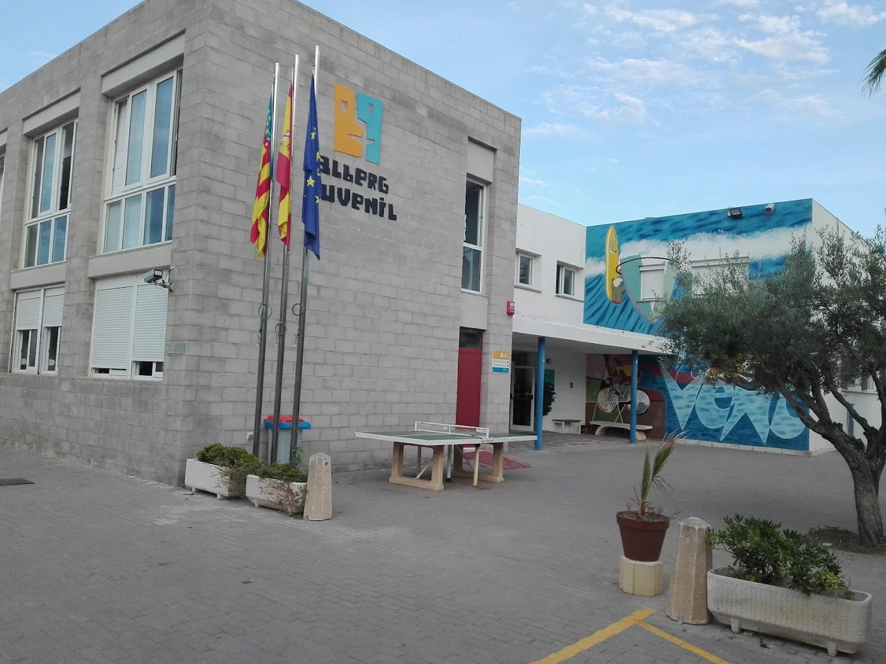

Piles
Mar i Vent
El Albergue es un edificio de dos plantas construido a unos 30 metros de la orilla del mar, detalle que, junto al paisaje y la luminosidad mediterránea de su entorno, constituye la nota más característica de esta instalación. En la planta baja está el comedor, dos salas multiusos y parte de las habitaciones. En la primera planta está el resto de habitaciones y la biblioteca - sala de lectura. En el exterior se dispone de una pista deportiva, un comedor exterior, zona ajardinada y una explanada con duchas exteriores.